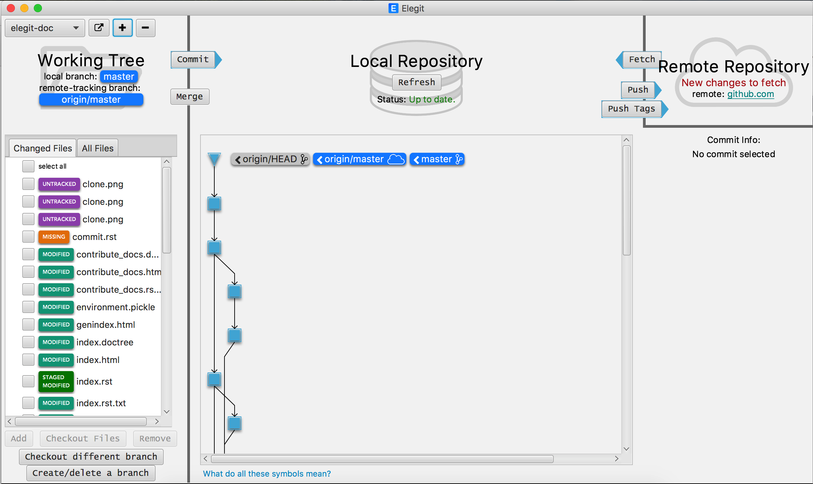
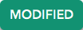
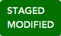
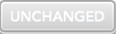

Repository Status¶
The main view in Elegit shows the status of your Working Tree, Local Repository, and Remote Repository.
Working Tree¶
The Working Tree is the directory of files that you are currently changing on the branch you are on. For more information about branches and branching, see Creating a Branch. The Working Tree pane in Elegit is your main way of seeing what files you have created, changed, or deleted. Clicking the All Files tab allows you to browse the file structure of your repository. Files in the working tree are tagged to represent their status.
- This file was deleted or otherwise removed from the repository.
- This file has not been added to git.
-  This file was modified after your most recent commit.
- This file has a version stored in your git index and is ready to commit.
-  This file has a version stored in your git index and other changes in the working directory.
- This file is being ignored because it is in your .gitignore. Remove it from your .gitignore if you want to add it to git.
-  This file has not been changed since your most recent commit.
- conflicting
- conflicting modified

{kind=link}
{kind=link}
{kind=link}
{kind=link}
{kind=link}
{kind=link}
{kind=link}
{kind=link}